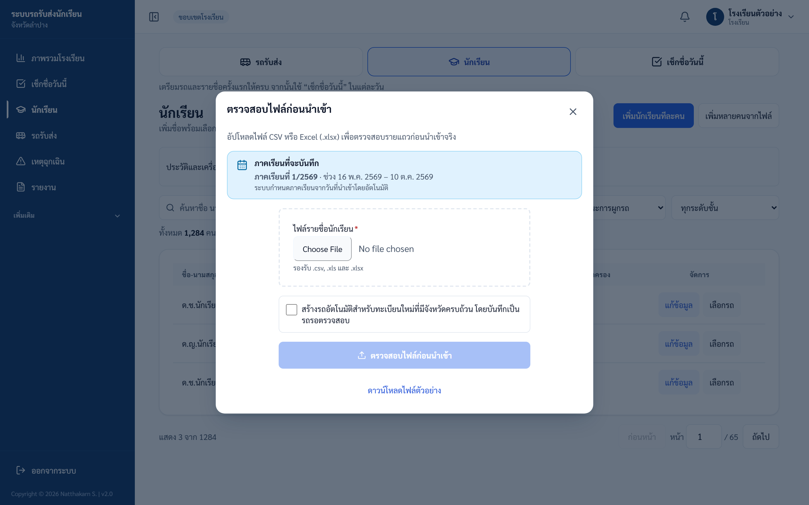
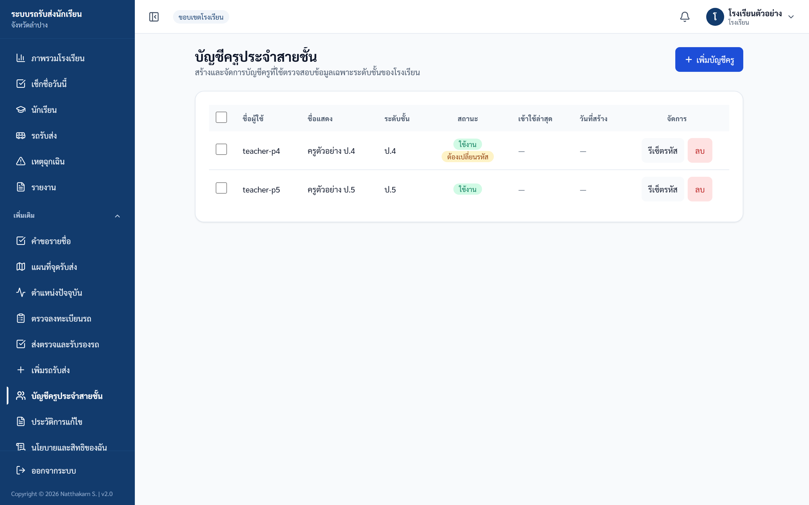
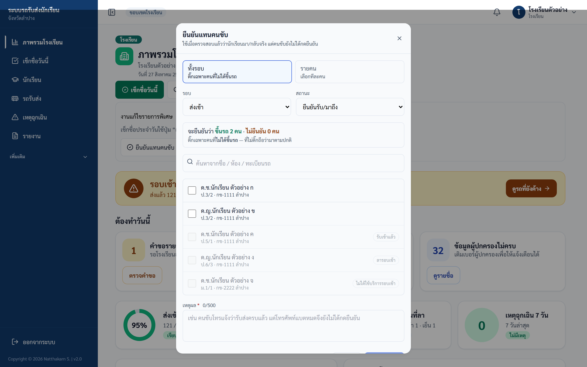
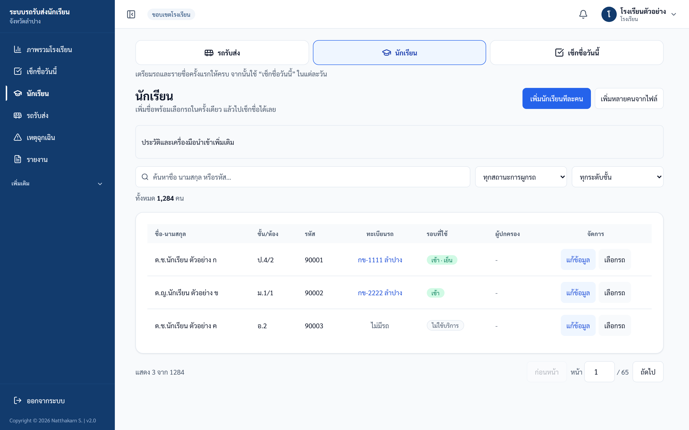
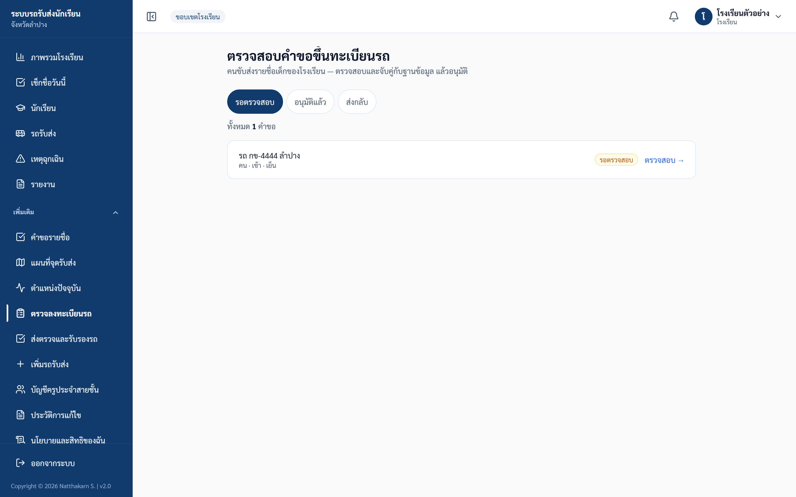
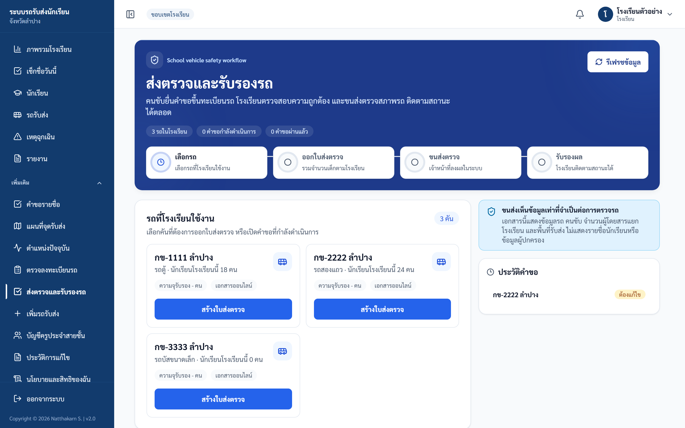
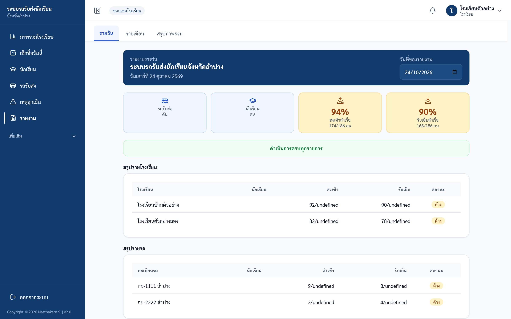
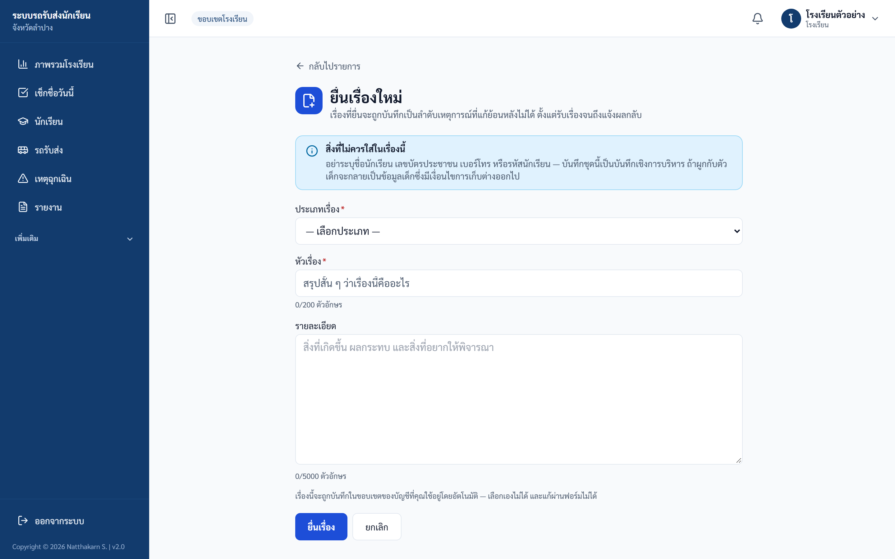

คู่มือโรงเรียน (บัญชีหลักของโรงเรียน)
เว็บไซต์ schoolbuslampang.com · ปรับปรุง 24 ต.ค. 2569 · ภาพในคู่มือเป็นข้อมูลตัวอย่าง
คู่มือนี้สำหรับใคร และทำอะไรได้บ้าง
สำหรับบัญชีหลักของโรงเรียน คือผู้ดูแลระบบของโรงเรียน หรือครูที่รับผิดชอบรถรับส่ง บัญชีนี้ทำได้ทุกอย่างของโรงเรียน:
- ดูภาพรวมทุกวันว่าเด็กถึงโรงเรียนและกลับบ้านครบหรือยัง
- เช็กชื่อเด็กขึ้น-ลงรถได้ทุกชั้น
- เพิ่มและแก้ข้อมูลนักเรียน และเลือกรถให้เด็ก
- เพิ่มรถรับส่ง และส่งรถไปตรวจสภาพ
- สร้างบัญชีให้ครูประจำสายชั้น
- ดูรายงาน และดาวน์โหลดเป็นไฟล์
💡 ครูประจำสายชั้นที่ทำแค่เช็กชื่อ ให้อ่าน คู่มือครูเช็กชื่อ แทน บัญชีครูประจำสายชั้นเห็นเฉพาะชั้นของตัวเอง เช็กชื่อได้ ส่วนข้อมูลอื่นดูได้อย่างเดียว
เริ่มต้นใช้งาน
เข้าสู่ระบบ
- เปิด schoolbuslampang.com
- พิมพ์ชื่อผู้ใช้ของโรงเรียนในช่อง ชื่อผู้ใช้หรือทะเบียนรถ
- พิมพ์รหัสผ่าน
- กด เข้าสู่ระบบ

ภาพ: หน้าเข้าสู่ระบบ
- ชื่อผู้ใช้ ของบัญชีหลัก ได้จากเขตพื้นที่การศึกษาหรือผู้ดูแลระบบ
- เข้าครั้งแรก ระบบจะให้ตั้งรหัสผ่านใหม่ก่อน รหัสใหม่ต้องยาวอย่างน้อย 8 ตัวอักษร ตั้งเสร็จแล้วให้เข้าสู่ระบบอีกครั้งด้วยรหัสใหม่
- ลืมรหัสผ่าน ระบบไม่มีปุ่มตั้งรหัสใหม่เอง ให้ติดต่อเขตพื้นที่การศึกษาหรือผู้ดูแลระบบให้ตั้งให้
- ออกจากระบบ กดชื่อบัญชีที่มุมขวาบน แล้วกด ออกจากระบบ ถ้าใช้เครื่องร่วมกับคนอื่น ให้ออกจากระบบทุกครั้ง

ภาพ: เมนูบัญชีมุมขวาบน
เมนูอยู่ตรงไหน
- บนคอมพิวเตอร์: เมนูอยู่ด้านซ้าย เมนูที่ใช้ทุกวันอยู่ด้านบน คือ ภาพรวมโรงเรียน · เช็กชื่อวันนี้ · นักเรียน · รถรับส่ง · เหตุฉุกเฉิน · รายงาน
- เมนูที่ใช้นาน ๆ ครั้งพับไว้ใต้หัวข้อ เพิ่มเติม กดคำว่า เพิ่มเติม เพื่อเปิด
- บนมือถือ: มีแถบด้านล่าง 4 ปุ่ม คือ หน้าแรก · นักเรียน · เช็กชื่อ · รายงาน เมนูอื่นกดปุ่ม ☰ มุมซ้ายบน
- หน้า รถรับส่ง, นักเรียน และ เช็กชื่อวันนี้ มีปุ่ม 3 ปุ่มเรียงกันด้านบน กดสลับไปมาระหว่าง 3 หน้านี้ได้เลย
💡 คู่มือนี้เขียนเส้นทางเมนูแบบ เพิ่มเติม › ชื่อเมนู หมายถึง ให้เปิดกลุ่ม เพิ่มเติม ก่อน แล้วกดเมนูนั้น
ตั้งค่าครั้งแรก (ทำครั้งเดียว ก่อนเริ่มเช็กชื่อ)
ทำตามลำดับนี้ หน้าจอหน้า นักเรียน ก็เขียนไว้ว่า "เตรียมรถและรายชื่อครั้งแรกให้ครบ จากนั้นใช้ “เช็กชื่อวันนี้” ในแต่ละวัน"
- เพิ่มรถ ที่โรงเรียนใช้ (ถ้ารถยังไม่มีในระบบ)
- เพิ่มนักเรียน และเลือกรถให้เด็กแต่ละคน
- สร้างบัญชีครูประจำสายชั้น ถ้าต้องการให้ครูแต่ละชั้นเช็กชื่อเอง
1. เพิ่มรถรับส่ง
- ไปที่เมนู รถรับส่ง แล้วกด เพิ่มรถรับส่ง (หรือเมนู เพิ่มเติม › เพิ่มรถรับส่ง)
- ค้นหาก่อน: พิมพ์ทะเบียนในช่อง ค้นหารถที่มีอยู่แล้วในระบบ แล้วกด ค้นหา
- ถ้าเจอรถ ให้กด ใช้รถคันนี้ แล้วเพิ่มนักเรียน ไม่ต้องกรอกข้อมูลรถซ้ำ
- ถ้าไม่เจอ ให้กรอกในหัวข้อ เพิ่มรถใหม่: หมวดอักษร (เช่น นข) · เลขทะเบียน · จังหวัด
- กด รายละเอียดรถและคนขับ (กรอกเพิ่มเติมได้) เพื่อใส่ประเภทรถ ชื่อคนขับ เบอร์คนขับ และชื่อเจ้าของรถ
- มีหลายคัน กด + เพิ่มอีกคัน (ได้ครั้งละไม่เกิน 10 คัน)
- กด บันทึกรถใหม่ … คัน
ทำเสร็จแล้วจะเห็นกล่องสีเขียว บันทึกรถ … แล้ว และปุ่ม ต่อไป: เพิ่มนักเรียนขึ้นรถคันนี้
ℹ️ ถ้าใส่ชื่อคนขับ ระบบจะสร้างบัญชีให้คนขับ ชื่อผู้ใช้และรหัสผ่านแรกของคนขับคือทะเบียนรถ ให้แจ้งคนขับ คนขับจะต้องเปลี่ยนรหัสเมื่อเข้าครั้งแรก
ℹ️ รถที่เพิ่มแล้วจะยังไม่ขึ้นในหน้า รถรับส่ง จนกว่าจะมีนักเรียนของโรงเรียนเลือกใช้รถคันนั้น
2. เพิ่มนักเรียนและเลือกรถ
เพิ่มทีละคน (วิธีที่ง่ายที่สุด):
- ไปที่เมนู นักเรียน แล้วกด เพิ่มนักเรียนทีละคน
หรือที่หน้า รถรับส่ง กด เพิ่มนักเรียนใหม่ขึ้นรถคันนี้ ที่การ์ดของรถ ระบบจะเลือกรถให้แล้ว - กรอก รหัสนักเรียน, ชื่อ, นามสกุล (จำเป็น) ชั้น และห้อง
- ที่หัวข้อ 2. เลือกรถรับส่ง เลือกรถของเด็ก (ยังไม่รู้รถ ข้ามไปก่อนได้)
- ถ้ามีข้อมูลผู้ปกครอง ให้กรอกชื่อและเบอร์โทร
- กด ตรวจสอบก่อนบันทึก ดูชื่อและรถให้ถูก แล้วกด ยืนยันเพิ่มนักเรียน
- คนต่อไปนั่งรถคันเดียวกัน กด เพิ่มคนถัดไปในรถคันเดิม
ทำเสร็จแล้วจะเห็นหัวข้อ เพิ่มนักเรียนแล้ว เด็กใช้รถทั้งรอบเช้าและเย็นเป็นค่าเริ่มต้น พร้อมเช็กชื่อได้ทันที
เลือกรถให้เด็กที่มีชื่ออยู่แล้ว:
- ที่หน้า นักเรียน เปลี่ยนตัวกรอง ทุกสถานะการผูกรถ เป็น ยังไม่ผูกรถ เพื่อดูเฉพาะเด็กที่ยังไม่มีรถ
- กด เลือกรถ ท้ายแถวของเด็ก (ถ้ามีรถแล้ว ปุ่มจะเป็น เปลี่ยนรถ)
- เลือกรถ แล้วกด เพิ่มเข้ารถ (หรือ เปลี่ยนรถ) ถ้าต้องการเอาเด็กออกจากรถ ให้เลือกไม่มีรถ แล้วกด ลบออกจากรถ
เพิ่มหลายคนจากไฟล์ Excel:
- ที่หน้า นักเรียน กด ประวัติและเครื่องมือนำเข้าเพิ่มเติม แล้วกด ดาวน์โหลดไฟล์ตัวอย่าง
- กรอกรายชื่อลงไฟล์ตัวอย่าง (รหัสนักเรียน ชื่อ นามสกุล จำเป็น · ช่องทะเบียนรถต้องมีจังหวัดด้วย) แล้วบันทึกเป็น .xlsx หรือ .csv
- กด เพิ่มหลายคนจากไฟล์ เลือกไฟล์ แล้วกด ตรวจสอบไฟล์ก่อนนำเข้า (ขั้นนี้ยังไม่บันทึก)
- ดูผลรายแถว แถวที่มีปัญหาจะบอกเหตุผล แถวที่ต้องยืนยัน ให้ติ๊กเลือก
- กด ยืนยันนำเข้า

ภาพ: เลือกไฟล์ แล้วกด "ตรวจสอบไฟล์ก่อนนำเข้า"
⚠️ ไฟล์ .xls (Excel รุ่นเก่า) ใช้ไม่ได้ ถึงหน้าจอจะให้เลือกได้ ให้เปิดใน Excel แล้วบันทึกเป็น .xlsx ก่อน · ไฟล์ต้องไม่เกิน 5MB และไม่เกิน 5,000 แถว
ทำเสร็จแล้วจะเห็นหัวข้อ นำเข้าเสร็จสิ้น นำเข้าผิด ให้แก้ได้ที่ ประวัติการนำเข้า (ดูหัวข้อ "งานอื่น ๆ")
3. สร้างบัญชีครูประจำสายชั้น
- ไปที่เมนู เพิ่มเติม › บัญชีครูประจำสายชั้น
- กด + เพิ่มบัญชีครู
- พิมพ์ ชื่อผู้ใช้ (แนะนำแบบ SCH0001-P4 คือรหัสโรงเรียน-ชั้น) และชื่อแสดง
- เลือก ระดับชั้น ที่ครูดูแล
- ตั้งรหัสผ่าน (อย่างน้อย 8 ตัวอักษร ห้ามเหมือนชื่อผู้ใช้ ห้ามง่ายเกินไป เช่น 12345678) และพิมพ์ซ้ำในช่อง ยืนยันรหัสผ่าน
- กด สร้างบัญชี
- แจ้งชื่อผู้ใช้และรหัสผ่านให้ครู ครูจะต้องเปลี่ยนรหัสเมื่อเข้าครั้งแรก

ภาพ: หน้าบัญชีครูประจำสายชั้น
ทำเสร็จแล้วจะเห็นบัญชีใหม่ในตาราง มีป้าย ต้องเปลี่ยนรหัส จนกว่าครูจะเข้าครั้งแรก
งานประจำวัน (ทำตามลำดับ)
- เช้า: เปิด ภาพรวมโรงเรียน ดูว่ามีอะไรค้าง
- เช้า: เช็กชื่อเด็กที่ถึงโรงเรียน (หรือให้ครูประจำสายชั้นเช็กเอง)
- เย็น: เช็กชื่อเด็กที่ขึ้นรถกลับบ้าน
- ก่อนกลับ: ดูภาพรวมอีกครั้งว่ารอบเย็นครบ
ดูภาพรวมโรงเรียน
หน้านี้ขึ้นเป็นหน้าแรกหลังเข้าสู่ระบบ (มือถือ = ปุ่ม หน้าแรก) อ่านจากบนลงล่าง:
- ปุ่มด้านบน: เช็กชื่อวันนี้ (ปุ่มสีเขียว) · นักเรียน · รถรับส่ง · รายงานวันนี้
- แถบสรุป: ประโยคเดียวบอกสถานะวันนี้ เช่น รอบเช้ายังค้าง 7 คน (สีเหลือง) หรือ วันนี้รับส่งครบแล้ว (สีเขียว) ถ้ามีค้าง กด ดูรถที่ยังค้าง
- ต้องทำวันนี้: การ์ดงานที่ค้าง เช่น นักเรียนยังไม่ผูกรถ, ข้อมูลผู้ปกครองไม่ครบ, คำขอรายชื่อจากคนขับ กดปุ่มในการ์ดเพื่อไปทำต่อ ถ้าไม่มีงานค้าง การ์ดจะไม่ขึ้น
- ตัวเลข 4 ช่อง: ส่งเช้า · รับเย็น · นักเรียนที่ลา · เหตุฉุกเฉิน 7 วัน
- กราฟ: การรับส่ง 7 วันล่าสุด และรายรถวันนี้ (คันที่ค้างมากอยู่บนสุด)
- ล่างสุด: หัวข้อที่พับไว้ สถานะรถแต่ละคัน · รายการลา · ความครบถ้วนข้อมูล กดที่หัวข้อเพื่อเปิด
| ป้ายบนจอ | หมายความว่า |
|---|---|
| เรียบร้อย (เขียว) | ครบแล้ว ไม่ต้องทำอะไร |
| รอติดตาม (เหลือง) | ยังไม่ครบ ควรตามดู |
| ต้องรีบ (แดง) | ขาดมาก หรือมีเรื่องต้องดูทันที |
| ยังไม่เริ่ม (เทา) | รอบนั้นยังไม่มีใครเช็กชื่อ |
ดูเสร็จแล้วจะรู้ว่าวันนี้ปกติหรือไม่ และต้องตามเรื่องไหน
เช็กชื่อขึ้น-ลงรถ
- กดปุ่มสีเขียว เช็กชื่อวันนี้ (มือถือ = ปุ่ม เช็กชื่อ ด้านล่าง)
- ดูรอบด้านบนให้ถูก: เช้า · ถึงโรงเรียน หรือ เย็น · ขึ้นรถกลับบ้าน
- เห็นเด็กคนไหน แตะชื่อเด็กคนนั้น 1 ครั้ง ระบบบันทึกทันที
บัญชีหลักเห็นเด็กทุกชั้น ส่วนวิธีใช้หน้านี้ทั้งหมด (บันทึกทั้งคัน · กดผิดแล้วยกเลิก · ความหมายป้ายข้างชื่อ) อ่านใน คู่มือครูเช็กชื่อ ใช้หน้าเดียวกัน
ℹ️ คนขับยังเช็กชื่อในแอปของคนขับได้ตามปกติ ใครบันทึกก่อน ระบบนับครั้งเดียว ถ้าขึ้นว่า มีการบันทึกไว้แล้ว (คนขับหรือครูท่านอื่น) ไม่ต้องทำอะไรเพิ่ม
ทำเสร็จแล้วตัวเลขในภาพรวมและรายงานจะเปลี่ยนทันที และผู้ปกครองที่ผูก LINE ไว้จะเห็นสถานะของลูก
งานอื่น ๆ (ทำเมื่อจำเป็น)
ยืนยันแทนคนขับ (เมื่อคนขับลืมกด)
ใช้เมื่อตรวจแล้วว่าเด็กขึ้นรถหรือกลับจริง แต่คนขับไม่ได้กดในแอป ต้องใส่เหตุผลทุกครั้ง งานเช็กชื่อปกติให้ใช้ เช็กชื่อวันนี้ แทน
- ที่ ภาพรวมโรงเรียน กด งานแก้ไขรายการพิเศษ แล้วกด ยืนยันแทนคนขับ
- เลือกแบบ ทั้งรอบ (ทั้งรถ) หรือ รายคน (ทีละคน)
- เลือก รอบ (ส่งเช้า / รับเย็น) และ สถานะ (ยืนยันรับ/มาถึง หรือ ยืนยันส่ง/ออก)
- แบบทั้งรอบ: ติ๊กเฉพาะเด็กที่ไม่ได้ขึ้นรถ เด็กที่ไม่ติ๊กจะถูกนับว่ามาตามปกติ
แบบรายคน: ค้นหาแล้วเลือกเด็กที่ต้องการ - พิมพ์ เหตุผล เช่น "คนขับโทรแจ้งว่ารับส่งครบแล้ว แต่โทรศัพท์แบตหมด"
- ดูตัวเลข "จะยืนยันว่า ขึ้นรถ … คน · ไม่ยืนยัน … คน" ให้ถูก แล้วกด ยืนยัน … คน
- ระบบขึ้นกล่อง ตรวจตัวเลขอีกครั้งก่อนบันทึก ถ้าถูกต้อง กด ยืนยันแน่นอน — … คน

ภาพ: ยืนยันแทนคนขับ แบบ "ทั้งรอบ"
⚠️ ติ๊ก = ไม่ได้ขึ้นรถ ไม่ใช่ "มา" ถ้าติ๊กกลับด้าน ทั้งคันจะผิด · บันทึกแล้วผู้ปกครองเห็นใน LINE ทันที และยกเลิกเองไม่ได้ · เด็กที่ลา หรือบันทึกไปแล้ว ระบบจะไม่นับซ้ำ
ทำเสร็จแล้วจะเห็น บันทึกสำเร็จ และจำนวนที่ยืนยัน
แก้ข้อมูลนักเรียน
- ไปที่เมนู นักเรียน พิมพ์ชื่อ นามสกุล หรือรหัสในช่องค้นหา (กรองตามชั้นได้ที่ ทุกระดับชั้น)
- กด แก้ข้อมูล ท้ายแถวของเด็ก
- แก้ชื่อ ชั้น ห้อง รอบที่ใช้รถ (ใช้บริการรอบเช้า / ใช้บริการรอบเย็น) หรือข้อมูลผู้ปกครอง
- กด บันทึกข้อมูลนักเรียน

ภาพ: ตารางรายชื่อนักเรียน ปุ่ม "เพิ่มนักเรียนทีละคน" และ "เพิ่มหลายคนจากไฟล์" อยู่มุมขวาบน
- เบอร์ผู้ปกครองต้องเป็นตัวเลข 9–10 หลัก
- ถ้าเปลี่ยนชื่อหรือเบอร์ผู้ปกครอง ผู้ปกครองต้องผูก LINE ใหม่ที่ LINE OA @943glwjf จึงจะเห็นสถานะของลูก
- เด็กย้ายโรงเรียน หรือลาออก: ในหน้าต่างแก้ข้อมูล กด ย้ายโรงเรียน / นำรายชื่อออก แล้วเลือก ขอโอนย้ายนักเรียน (กรอกรหัสโรงเรียนปลายทางและเหตุผล แล้วกด ส่งคำขอโอนย้าย) หรือ ลาออก / ลบออกจากระบบ
- การโอนย้ายเป็นคำขอ ต้องรอผู้ดูแลระบบอนุมัติก่อน ข้อมูลจึงจะย้าย
ดูและแก้ข้อมูลรถ
- ไปที่เมนู รถรับส่ง ค้นหาทะเบียนได้จากช่องด้านบน
- การ์ดแต่ละคันบอกคนขับ ผู้ดูแลรถ เจ้าของรถ และจำนวนนักเรียน กด แสดงรายชื่อนักเรียน เพื่อดูเด็กในรถ
- ต้องแก้ประเภทรถ เจ้าของรถ หรือข้อมูลประกัน กด แก้ไขข้อมูลรถ แก้แล้วกด บันทึก
ทะเบียนรถแก้ที่หน้านี้ไม่ได้ ข้อมูลคนขับ ให้คนขับแก้เองในแอปของคนขับ
ตรวจรายชื่อเด็กที่คนขับส่งมา
คนขับส่งรายชื่อเด็กที่นั่งรถมาให้โรงเรียนตรวจ ต้องตรวจให้ครบก่อนรถจะพร้อมใช้งาน
- ไปที่เมนู เพิ่มเติม › ตรวจลงทะเบียนรถ แท็บ รอตรวจสอบ
- กด ตรวจสอบ → ที่รถคันนั้น
- แต่ละชื่อ ระบบจะเสนอเด็กที่ตรงกัน ถ้าใช่ กด ยืนยัน ถ้าไม่เจอ กด ค้นหาเอง ถ้าไม่ใช่เด็กของเรา กด ไม่ใช่เด็กของโรงเรียนนี้
- ในหัวข้อ เอกสารรถและคนขับ กด ดูไฟล์ แล้วกด ผ่าน หรือ ไม่ผ่าน (ไม่ผ่านต้องใส่เหตุผล)
- ตรวจครบแล้ว กด อนุมัติทั้งหมด ถ้าข้อมูลผิด กด ส่งกลับแก้ไข และใส่เหตุผล

ภาพ: หน้าตรวจลงทะเบียนรถ
ถ้ายังตรวจไม่ครบ ปุ่มจะเป็น ตรวจให้ครบก่อน (เหลือ …) และกดไม่ได้ ปุ่มนี้ไม่ได้ดูเอกสาร จึงควรตรวจเอกสารให้เสร็จก่อนอนุมัติ
ส่งรถไปตรวจสภาพ
- ไปที่เมนู เพิ่มเติม › ส่งตรวจและรับรองรถ
- เลือกรถ แล้วกด สร้างใบส่งตรวจ
- ถ้าคนขับยื่นเรื่องมาเอง (สถานะ รอตรวจสอบ) ให้กด ตรวจสอบถูกต้อง หรือ ปฏิเสธคำขอ
- กด ยืนยันข้อมูลพร้อมพิมพ์
- กด พิมพ์ใบส่งตรวจ แล้วให้คนขับนำรถไปตรวจที่ขนส่ง ใบนี้มี QR ให้เจ้าหน้าที่สแกน

ภาพ: หน้าส่งตรวจและรับรองรถ
ใบส่งตรวจไม่มีชื่อเด็กหรือเบอร์โทร มีแค่จำนวนเด็กแต่ละโรงเรียน กลับมาดูสถานะที่หน้านี้ได้ เช่น ผ่าน / ไม่ผ่าน / ต้องแก้ไข ถ้าต้องการยกเลิก กด ยกเลิกคำขอ แล้วสร้างใบใหม่
จัดการบัญชีครู (ลืมรหัส / ลบบัญชี)
- ครูลืมรหัส: เมนู เพิ่มเติม › บัญชีครูประจำสายชั้น กด รีเซ็ตรหัส ที่ชื่อครู ตั้งรหัสใหม่ แล้วกด รีเซ็ตรหัสผ่าน
- ลบบัญชี: กด ลบ แล้วกด ลบบัญชี (ลบหลายคน ให้ติ๊กหน้าแถว แล้วกด ลบบัญชีที่เลือก)
- ต้องเปลี่ยนชั้นของครู: ระบบไม่มีปุ่มแก้ไขบัญชีครู ให้สร้างบัญชีใหม่ แล้วลบบัญชีเดิม ชื่อผู้ใช้ที่ลบแล้วใช้ซ้ำไม่ได้ ให้ตั้งชื่อใหม่ เช่น SCH0001-P4B
รายงานและดาวน์โหลดไฟล์
- ไปที่เมนู รายงาน
- เลือกแท็บ รายวัน, รายเดือน หรือ สรุปภาพรวม แล้วเลือกวันที่หรือเดือน
- ต้องการไฟล์ เลื่อนลงไปที่ ดาวน์โหลด: แล้วกด CSV, Excel หรือ PDF

ภาพ: รายงานรายวัน
ทำเสร็จแล้วจะเห็นข้อความ ดาวน์โหลด … สำเร็จ ไฟล์มีเฉพาะข้อมูลของโรงเรียนคุณ
เมนูอื่นในกลุ่ม "เพิ่มเติม"
| เมนู | ใช้ทำอะไร |
|---|---|
| เหตุฉุกเฉิน (เมนูหลัก) | ดูเหตุที่คนขับแจ้งจากรถของโรงเรียน ดูได้อย่างเดียว |
| คำขอรายชื่อ | คำขอเพิ่มหรือถอนเด็กจากรถแบบเดิม ถ้ามีค้าง กด อนุมัติ หรือ ปฏิเสธ (คำขอใหม่จากคนขับจะไปอยู่ที่ ตรวจลงทะเบียนรถ) |
| แผนที่จุดรับส่ง | ดูและเพิ่มจุดรับส่ง กด เพิ่มจุดรับส่ง เลือกรถก่อน ใส่ชื่อจุด คลิกบนแผนที่ เลือกรอบ เลือกเด็ก แล้วกด บันทึก |
| ตำแหน่งปัจจุบัน | ดูตำแหน่งรถบนแผนที่ รถขึ้นเฉพาะตอนที่คนขับเปิดส่งตำแหน่ง |
| ประวัติการแก้ไข | ดูว่าใครเพิ่ม แก้ หรือลบอะไร เมื่อไร |
| นโยบายและสิทธิของฉัน | อ่านประกาศเรื่องการใช้ข้อมูล ถ้ายังไม่มีฉบับที่อนุมัติ หน้าจะว่าง |
| เรื่องที่ต้องมีส่วนร่วม / สรุปการมีส่วนร่วม | ยื่นข้อเสนอหรือข้อกังวลให้หน่วยงานพิจารณาและแจ้งผลกลับ ไม่ใช่ช่องทางแจ้งเหตุด่วน (ดูด้านล่าง) |
ประวัติการนำเข้า (แก้เมื่อนำเข้าผิด)
- ที่หน้า นักเรียน กด ประวัติและเครื่องมือนำเข้าเพิ่มเติม แล้วกด ประวัติการนำเข้า
- เลือกชุดที่นำเข้าผิด
- ติ๊กรายการ แล้วกด ย้อนกลับรายการที่เลือก
- พิมพ์ เหตุผลในการย้อนกลับ แล้วกด ยืนยันย้อนกลับ
ระบบจะซ่อนเฉพาะนักเรียนที่ชุดนั้นเพิ่มเข้ามา ไม่กระทบนักเรียนที่มีอยู่เดิม
เรื่องที่ต้องมีส่วนร่วม
- ไปที่เมนู เพิ่มเติม › เรื่องที่ต้องมีส่วนร่วม ค้นดูก่อนว่ามีเรื่องเดียวกันแล้วหรือยัง
- กด ยื่นเรื่องใหม่ เลือกประเภท พิมพ์หัวเรื่องและรายละเอียด
- กด ยื่นเรื่อง แล้วกลับมาดูความคืบหน้าที่ ดูรายละเอียด

ภาพ: แบบฟอร์มยื่นเรื่องใหม่
⚠️ บันทึกแล้วแก้หรือลบไม่ได้ · ระบบไม่แจ้งเตือนใครเมื่อมีเรื่องใหม่ ต้องเปิดดูเอง · ห้ามพิมพ์ชื่อเด็ก เลขบัตรประชาชน หรือเบอร์โทร ในเรื่อง · บัญชีครูประจำสายชั้นก็ยื่นและบันทึกเรื่องในนามโรงเรียนได้ ควรตกลงกันก่อนว่าใครเป็นคนบันทึก
ปัญหาที่พบบ่อย
| ถ้าเห็น/ถ้าเกิด | ให้ทำแบบนี้ |
|---|---|
| ขึ้นว่า ชื่อผู้ใช้หรือรหัสผ่านไม่ถูกต้อง | ตรวจตัวพิมพ์และภาษาแป้นพิมพ์ ถ้ายังไม่ได้ ติดต่อเขตพื้นที่หรือผู้ดูแลระบบให้ตั้งรหัสใหม่ |
| ขึ้นว่า มีการพยายามเข้าสู่ระบบหลายครั้ง | รอประมาณ 15 นาที แล้วลองใหม่ บัญชีไม่ได้ถูกปิด |
| เปลี่ยนรหัสแล้วถูกพาออกจากระบบ | เป็นเรื่องปกติ เข้าสู่ระบบใหม่ด้วยรหัสใหม่ |
| เพิ่มรถแล้ว แต่ไม่เห็นในหน้า รถรับส่ง | ไปที่ นักเรียน แล้วเลือกรถให้เด็กอย่างน้อย 1 คน รถจะขึ้นเอง |
| ตอนเพิ่มรถ ขึ้นว่าทะเบียนนี้มีในระบบแล้ว | ค้นหาทะเบียนด้านบน แล้วกด ใช้รถคันนี้ แล้วเพิ่มนักเรียน ไม่ต้องเพิ่มใหม่ |
| ขึ้นว่า รถทะเบียนนี้ถูกปิดใช้งานอยู่ | กด ส่งคำขอกู้คืนรถนี้ แล้วรอผู้ดูแลระบบอนุมัติ |
| นำเข้าไฟล์แล้วขึ้น ไม่พบรถ | เพิ่มรถก่อน (เมนู เพิ่มเติม › เพิ่มรถรับส่ง) แล้วตรวจไฟล์ใหม่ หรือติ๊ก สร้างรถอัตโนมัติสำหรับทะเบียนใหม่ที่มีจังหวัดครบถ้วน ก่อนกดตรวจไฟล์ · ทะเบียนต้องมีจังหวัดเสมอ |
| ไฟล์ .xls นำเข้าไม่ได้ | เปิดใน Excel แล้วบันทึกเป็น .xlsx หรือ .csv |
| หาชื่อเด็กไม่เจอ | ตรวจตัวกรองชั้นและการผูกรถ ให้เป็น ทุกระดับชั้น และ ทุกสถานะการผูกรถ · ถ้าเคยกดลบไปแล้ว ชื่อจะไม่ขึ้นอีก |
| หน้าเช็กชื่อไม่มีชื่อเด็กบางคน | เด็กยังไม่ได้เลือกรถ หรือไม่ได้ใช้รถรอบนั้น ไปที่ นักเรียน แล้วเลือกรถหรือติ๊กรอบที่ใช้ |
| ผู้ปกครองไม่เห็นสถานะใน LINE หลังแก้เบอร์ | ให้ผู้ปกครองผูก LINE ใหม่ที่ @943glwjf |
| ครูกดแก้ข้อมูลไม่ได้ หรือไม่เห็นบางเมนู | เป็นปกติ บัญชีครูประจำสายชั้นเช็กชื่อได้อย่างเดียว งานอื่นให้บัญชีหลักทำ |
| กดดาวน์โหลดรายงานแล้วไม่มีไฟล์ | อนุญาตป๊อปอัปของเว็บ schoolbuslampang.com ในเบราว์เซอร์ แล้วลองใหม่ |
| ส่งคำขอโอนย้ายแล้ว ข้อมูลยังไม่ย้าย | รอผู้ดูแลระบบอนุมัติ ดูสถานะได้ในหน้าต่าง ขอโอนย้ายนักเรียน ของเด็กคนนั้น |
ติดต่อใครเมื่อมีปัญหา
| เรื่อง | ติดต่อ |
|---|---|
| บัญชีหลักของโรงเรียนลืมรหัส หรือเข้าไม่ได้ | เขตพื้นที่การศึกษา หรือผู้ดูแลระบบ |
| ครูประจำสายชั้นลืมรหัส | บัญชีหลักของโรงเรียน (กด รีเซ็ตรหัส) |
| คนขับลืมรหัส | ผู้ดูแลบัญชีของโรงเรียน ตามที่หน้าเข้าสู่ระบบแนะนำ |
| โอนย้ายนักเรียน / กู้คืนรถ | ส่งคำขอในระบบ แล้วรอผู้ดูแลระบบอนุมัติ |
| ตรวจสภาพรถ | สำนักงานขนส่ง |
เมื่อแจ้งปัญหา ให้บอก:
- ชื่อผู้ใช้ และรหัสโรงเรียน
- หน้าหรือเมนูที่เกิดปัญหา
- วันและเวลาที่เกิด
- ภาพหน้าจอ และข้อความที่ขึ้นบนจอ
ข้อควรระวังเรื่องข้อมูลนักเรียน
- ใช้ข้อมูลเด็กและผู้ปกครองเฉพาะงานรถรับส่งเท่านั้น
- อย่าส่งไฟล์รายงานหรือภาพหน้าจอที่มีชื่อเด็กหรือเบอร์โทรลงกลุ่มไลน์สาธารณะ
- อย่าบอกรหัสผ่านให้คนอื่น ครูแต่ละคนควรมีบัญชีของตัวเอง
- ทุกการเพิ่ม แก้ ลบ และดาวน์โหลด ระบบบันทึกไว้ว่าใครทำ
ตรวจความเข้าใจหลังอบรม
- ☐ เข้าสู่ระบบและเปลี่ยนรหัสผ่านครั้งแรกได้
- ☐ เพิ่มรถ 1 คัน และเพิ่มนักเรียน 1 คนขึ้นรถคันนั้นได้
- ☐ หาเด็กที่ยังไม่ผูกรถ และเลือกรถให้ได้
- ☐ สร้างบัญชีครูประจำสายชั้น และรีเซ็ตรหัสให้ครูได้
- ☐ เช็กชื่อรอบเช้าและรอบเย็นได้
- ☐ รู้ว่าเมื่อไรควรใช้ ยืนยันแทนคนขับ และติ๊กเฉพาะเด็กที่ไม่ได้ขึ้นรถ
- ☐ ดาวน์โหลดรายงานรายวันได้
หมายเหตุ: บางความสามารถของระบบ เช่น การคาดเวลารถถึง และการแจ้งเตือนเมื่อรถออกนอกเส้นทาง ยังไม่เปิดใช้งาน จึงไม่มีในคู่มือนี้